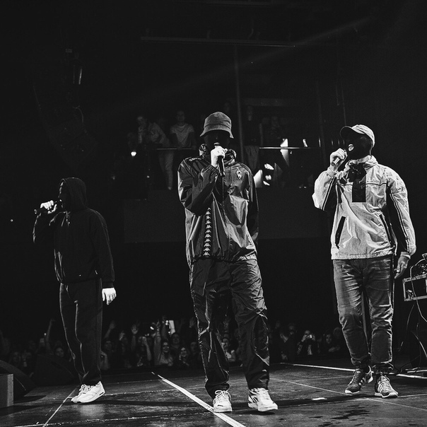

«УННВ» – творческий коллектив, широко известный в кругах ценителей рэп-культуры. Его участники пишут композиции со специфической подачей, однако свежие треки исполнителей пользуются популярностью у русскоязычных слушателей.
Как расшифровывается УННВ
Одним из главных вопросов, которым задаются новоиспеченные слушатели группы, является расшифровка аббревиатуры «УННВ». Члены коллектива не скрывают смысла названия их объединения. Наименование происходит от сочетания заглавных букв фразы «убиты, но не вами». Создатели не только объявили о смысле наименования широким массам. Участники символично выпустил отдельный трек, получивший название «Убиты но не вами».
История группы
В Сети содержится небольшое количество информации насчет группы и ее основателей, однако коллектив поделился с публикой основными фактами об «УННВ». Объединение было организовано в 2010 году тремя малоизвестными на тот момент исполнителями, которые публиковали свои работы под псевдонимами Crash, MarikMarakesh и Anq. В качестве битмейкера основатели пригласили Артема Artty, который сотрудничает с коллективом на протяжении всего его существования. В 2010 году свет увидел первый альбом, получивший название «Чернь». В сборник вошли 16 композиций, многие из которых являются любимыми для давних ценителей такого творчества. В то время группа уже заручилась поддержкой аудитории и начала развиваться в области рэп-культуры.